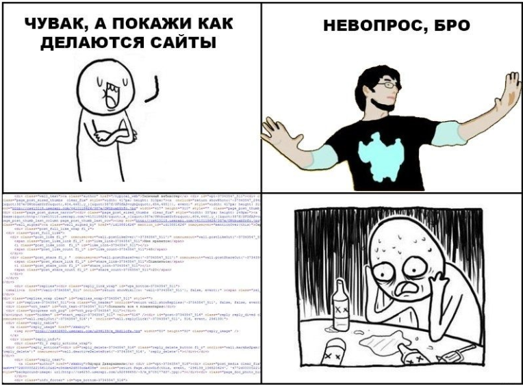

1
2
3
4
5
6
7
8
9
10
11
12
1.8 Формы
Тег <form> добавляет на страницу форму, которую пользователь может заполнить. Например,
ввести своё имя, фамилию или почту. Данные формы отправляются на сервер.
Сайты используют формы, чтобы получить какую-то информацию от пользователя. Это может быть форма заказа в
онлайн-магазине или форма обратной связи. Пользователь заполняет поля или выбирает нужную опцию в списке, а
после
отправки формы эти данные можно обработать.

Формы в HTML используются для отправки данных на сервер или для получения данных от пользователя. Основной
тег —< form>, внутри которого размещаются элементы ввода, такие как <input
>, < textarea>, < select>
и другие. Формы могут передавать данные методами GET или POST .
Они необходимы для взаимодействия пользователя с веб-приложениями, например, для регистрации, авторизации,
отправки сообщений или заполнения опросов.
Стилизовать <form> можно с помощью CSS. На странице можно сделать сколько угодно форм. Но одновременно
пользователь сможет отправить только одну заполненную
форму.
В теге <form > атрибут method определяет, каким
способом данные
будут отправлены на сервер. Он может принимать два основных значения:
- GET — Используется для запроса данных с сервера. Данные передаются через
URL-адрес в виде параметров запроса.
Особенности:
- - Данные видны в URL, что может быть рискованно для передачи конфиденциальной
информации (например, паролей)..
- - Есть ограничение на длину URL — обычно около 2000 символов.
- - Результаты GET-запросов могут быть кэшированы браузерами и прокси-серверами
Примеры использования:
- загрузка веб-страницы — браузер отправляет GET-запрос, чтобы получить HTML-код
страницы;
- отправка данных формы — поиск информации — при вводе поискового запроса браузер
формирует новый GET-запрос с параметрами поиска, а потом
отправляет его на сервер.
<form action="" method="get" >
<p >
< label for="name">Введите имя:</label >
<input type="text" name="name" id="name" required >
</p >
<p >
< label for="email">Введите email:</label >
< input type="email" name="email" id="email" required>
</p >
<button type="submit">Отправить< /button>
</form >
Никогда не используйте method="get", если хочется отправить конфиденциальные данные, потому что их можно
будет легко
прочитать в запросе, который отправляет форма, и даже в адресной строке браузера.
💡 Вариант method="get" удобен тем, что полученный URL с ответами можно сохранить в закладки. Например,
пользователь
может заполнить форму и поделиться ссылкой с результатами с кем-нибудь ещё.
POST — Применяется для отправки данных на сервер для обработки или сохранения.
Данные передаются в теле HTTP-запроса, а не через URL.
Особенности:
- - Нет ограничений по объёму информации (в рамках настроек сервера).
- - Данные передаются скрыто от пользователя.
- - Результаты POST-запросов не могут быть кэшированы браузерами и прокси-серверами.
Примеры использования:
- отправка форм, регистраций, входа в систему;
- загрузка файлов;
- работа с API (Application Programming Interface), где приложения обмениваются
данными друг с другом.
< >
Кроме этого HTML тег form представляет собой контейнер для других элементов управления. Ниже
приведен их
перечень:
- action — здесь указывается ссылка на скрипт, который обработает форму. Это
может быть полная URL-ссылка, а может
быть относительная, типа html/sendform. Если не указать атрибут action, то страница будет просто
обновляться каждый раз, когда отправляется форма.
- enctype — определяет тип кодирования данных формы. Обычно используется для
загрузки файлов
- method — определяет метод передачи данных формы. Обычно используется для
загрузки файлов
- name — определяет имя формы, которое будет использоваться для идентификации
формы на сервере.
- target — определяет целевую область для отображения результата отправки
формы.
- accept-charset — определяет набор символов, которые будут использоваться для
кодирования данных формы.
- autocomplete — определяет поведение автозаполнения формы.
- novalidate — отключает проверку формы.
- rel — определяет отношение между формой и ресурсом.
- rev — определяет обратное отношение между формой и ресурсом.
- enctype — определяет тип кодирования данных формы.
- accept — определяет типы файлов, которые могут быть загружены.
- autocomplete — определяет поведение автозаполнения формы.
< input> — тег для создания различных полей ввода: текста, пароля, чекбоксов,
радио-кнопок, кнопок и других.
Тип password для тега <input> используется для создания поля ввода пароля и
указывается в
атрибуте type. При вводе
символов они заменяются точками или звездочками, чтобы скрыть их от посторонних глаз.
Другие типы:
- text — поле ввода текста.
- checkbox — чекбокс.
- radio — радио-кнопка.
- button — кнопка.
- image — изображение.
- submit — кнопка отправки данных.
- reset — кнопка сброса данных.
- file — поле для загрузки файлов.
- hidden — скрытое поле.
- color — поле для выбора цвета.
- date — поле для ввода даты.
- datetime-local — поле для ввода даты и времени.
- email — поле для ввода адреса электронной почты.
- month — поле для ввода месяца.
- number — поле для ввода числа.
- range — поле для ввода диапазона.
- search — поле для поиска.
- tel — поле для ввода телефона.
- time — поле для ввода времени.
- url — поле для ввода URL-адреса.
- week — поле для ввода недели.
- textarea — поле для ввода многострочного текста.
- select — поле для выбора из списка.
- option — элемент списка.
- optgroup — группа элементов списка.
- label — метка для поля ввода.
- datalist — поле для ввода данных из предопределенного списка.
- progress — индикатор прогресса.
- meter — индикатор уровня.
- fieldset — группа полей ввода.
- legend — заголовок группы полей ввода.
- output — поле вывода данных.
- details — детали.
- summary — краткое описание деталей.
- dialog — диалоговое окно.
- command — команда.
- canvas — область для рисования.
- iframe — фрейм.
- embed — встроенный объект.
- object — объект.
- param — параметр объекта.
- video — видео.
- audio — аудио.
- source — источник для видео или аудио.
- track — трек для видео.
- keygen — генератор ключей.
< button> — создает кликабельную кнопку, которая может использоваться для отправки формы
или выполнения действий.
- disabled — отключает кнопку. Она становится серой и не реагирует на действия
пользователя.
< textarea>— многострочное текстовое поле для ввода длинного текста.
- maxlength — задает максимальное количество символов, которое пользователь
может ввести в поле < textarea>. Если пользователь попытается ввести больше символов, ввод будет
ограничен.
- name — имя поля ввода.
- placeholder — текст, который будет отображаться в поле при его отсутствии.
- cols — определяет количество столбцов в текстовом поле.
- rows — определяет количество строк в текстовом поле.
- readonly — делает текстовое поле только для чтения.
- disabled — отключает текстовое поле.
< >